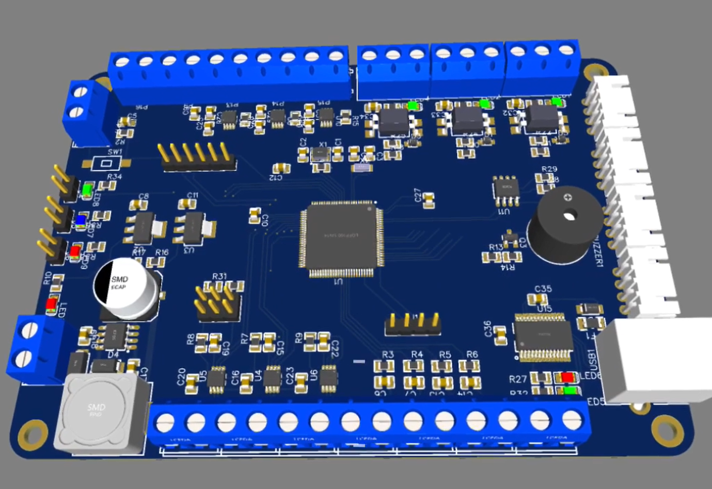
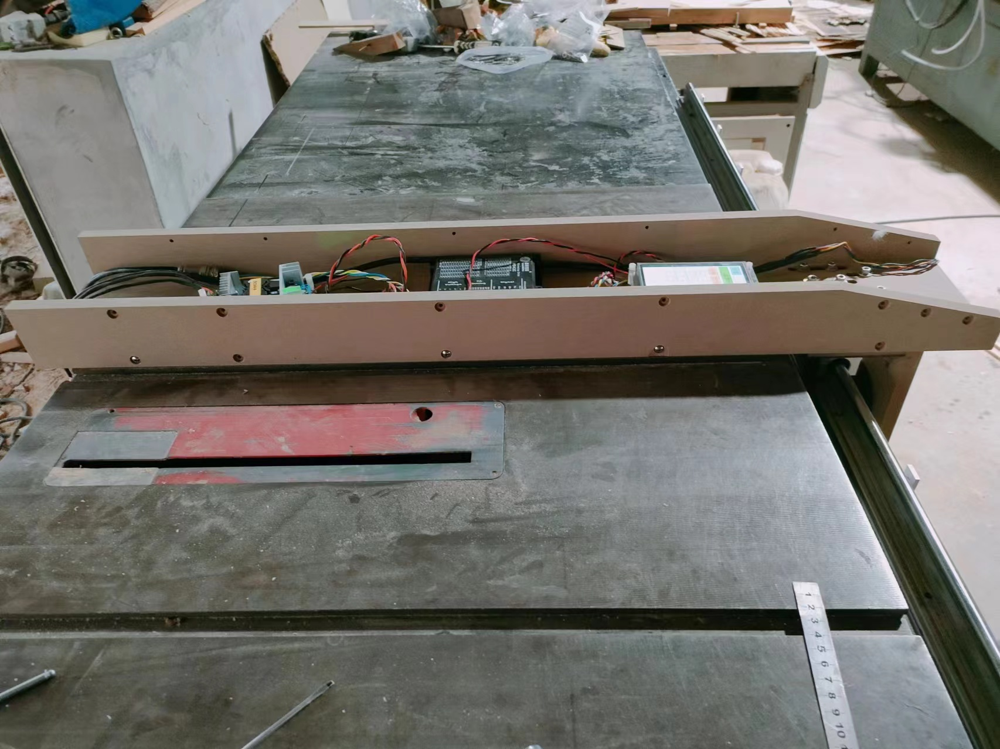
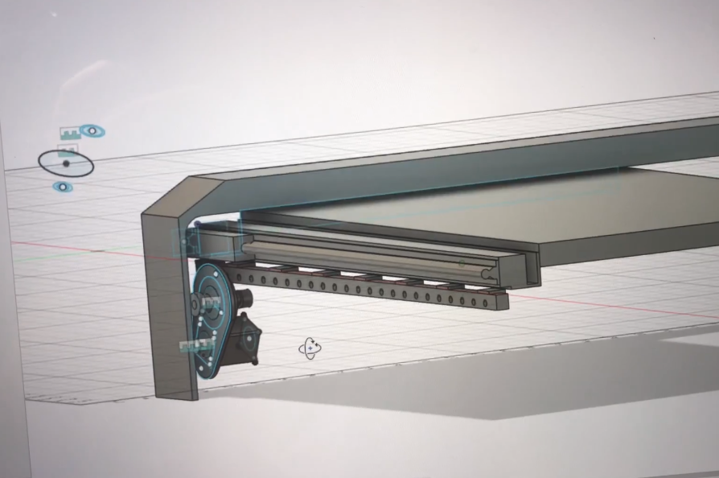
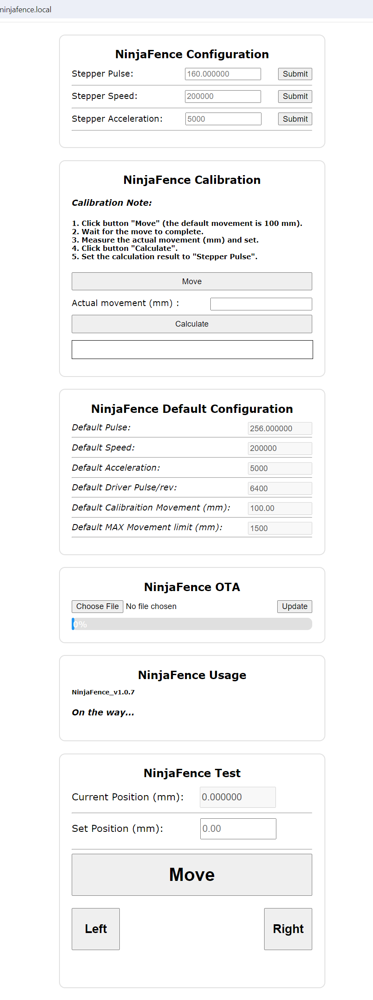
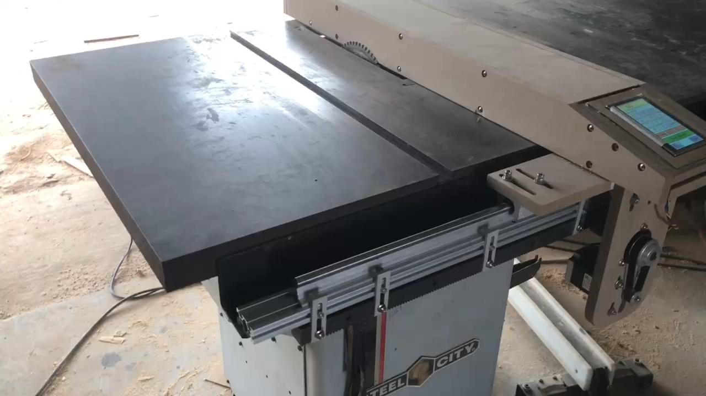

How I Built NinjaFence
April 2026
From a real workshop problem
NinjaFence didn’t start as a product idea — it started from a real problem in a workshop.
I’m an embedded software engineer, but I grew up around woodworking. My father has over 30 years of experience as a carpenter, and many of the tools I use today come from him.
One problem we constantly faced was positioning the table saw fence accurately and repeatedly. Manual adjustment is slow, and small errors accumulate over time.
I wanted to build something that could make this process simple, precise, and repeatable.
The first prototype

The very first version was extremely simple — just a stepper motor and basic control logic.
There was no enclosure, no UI, and no refinement. But it proved one thing:
the idea works.
Early wiring and lab testing

After validating the concept, I moved into lab testing.
At this stage, everything was still exposed:
- Loose wiring
- Basic drivers
- Manual control logic
This phase was mainly about stability and control reliability.
Custom PCB and system integration

To move beyond a prototype, I designed a custom PCB to integrate:
- Stepper control
- Power management
- Signal interface
- Touchscreen communication
This was the point where NinjaFence became a real system instead of a collection of modules.
However, this version was part of an early design that I eventually decided to abandon.
At that stage, I was not only trying to move the fence, but also to control:
- Blade height adjustment
- Blade tilt angle
While technically possible, the system quickly became too complex. Achieving a reliable and usable solution would require significantly more development time and effort.
The scope kept expanding, and the timeline became unpredictable.
So I made a deliberate decision:
focus on solving one problem well — precise and repeatable fence positioning.
The blade height and tilt control features were removed from the design. They may be revisited in the future, but only after the core system is fully stable and practical.
Mechanical integration

Once electronics were stable, the focus shifted to mechanics.
The goal was:
- Stable movement
- Repeatable positioning
- Compatibility with existing table saw setups
Final product assembly

After multiple iterations, the system became more compact and reliable.
At this stage, NinjaFence was no longer just a prototype — it was something usable in a real workshop.
Real machine integration

The most important step was testing on an actual table saw.
Adding UI and usability

A key improvement was adding a touchscreen interface.
Instead of manual adjustment, users can:
- Enter target position
- Jog with fine steps (0.1mm)
- Calibrate the system
This significantly improves usability in real workflows.
System control and connectivity

Later versions added firmware OTA and system-level improvements.
The system became:
- Updatable
- More stable
- Easier to maintain
What NinjaFence is today

NinjaFence is now a practical tool used in real woodworking environments.
It turns a manual fence into a precise, repeatable positioning system.
Why I built it
This project started from a simple goal:
make woodworking easier for my father.
If it can also help other woodworkers improve their workflow, that would mean a lot.
What’s next
NinjaFence is still evolving.
- Better UI
- More automation
- More refined mechanical design
But the core idea remains the same:
solve real problems with practical tools.